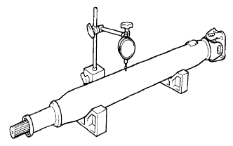
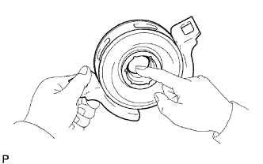

CỤM TRỤC CÁC ĐĂNG PHÍA SAU > KIỂM TRA |
| 1. KIỂM TRA TRỤC CÁC ĐĂNG VÀ TRỤC TRUNG GIAN |
|  |
Dùng đồng hồ so, đo độ đảo của trục các đăng và trục trung gian.
| Hạng mục | Điều kiện tiêu chuẩn |
| Trục các đăng | 0.3 mm (0.012 in.) |
| Trục trung gian | 0.5 mm (0.02 in.) |
| 2. KIỂM TRA CỤM TRỤC CHỮ THẬP KHỚP CÁCĐĂNG |
Kiểm tra mòn hoặc hư hỏng của các ổ bi trục chữ thập.
Kiểm tra độ rơ dọc trục ổ bi trục chữ thập bằng cách quay khớp trong khi nắm chặt lấy trục cácđăng.
| 3. KIỂM TRA CỤM VÒNG BI ĐỠ GIỮA NO.1 |
|  |
Khi quay vòng bi đỡ giữa bằng tay, kiểm tra rằng nó quay êm không bị kẹt, và không có vết xước hay hư hỏng.
Nếu có bất cứ hư hỏng nào, hãy thay thế nó.
Nếu có bất cứ hư hỏng nào đối với lợi của hộp vòng bi giữa, hãy thay thế nó.